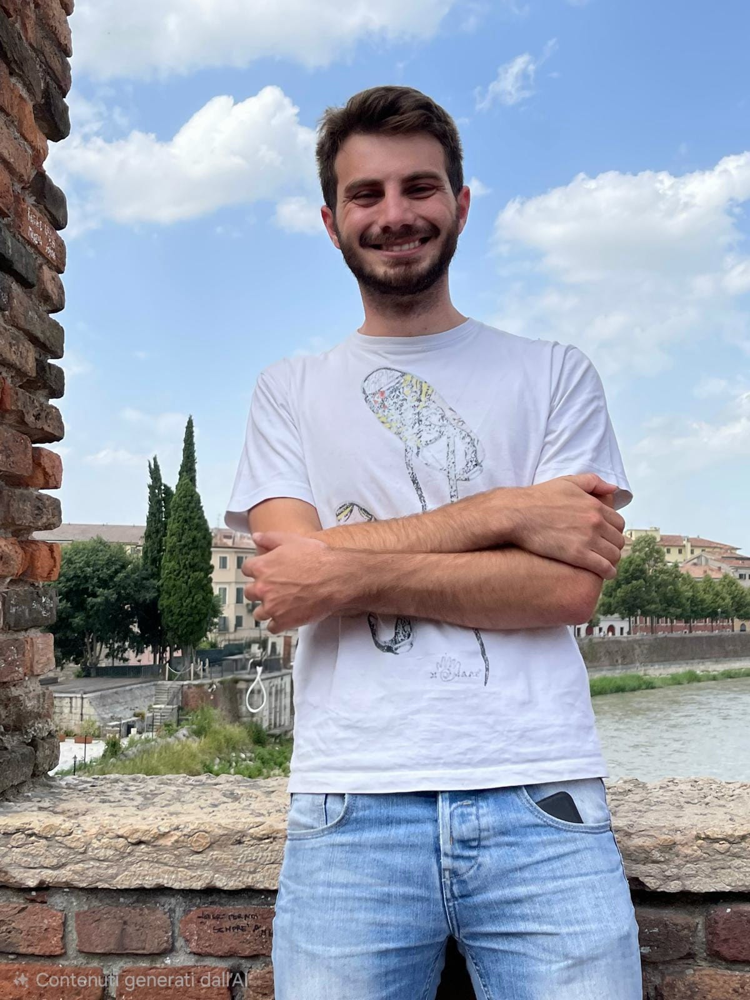

Paolo Suin
Astrophysicist · Star formation and numerical simulations
Hi! I’m an astrophysicist at CEA Paris-Saclay, where I use numerical simulations to study how stars form. My studies revolve around the fascinating circular nature of the process. I follow how gas assembles into clouds from the chaotic interstellar medium, how those clouds collapse under their own gravity, and how stars are formed along the way. Then the loop closes, and the new stars, through their feedback, restructure the natal environment and stir energy and turbulence into the interstellar medium, setting the stage for the next generation. That is the story I try to piece together, one simulation at a time.
paolo.suin [at] gmail.com·Google Scholar

Research
Stellar feedback
How do stellar feedback affect the next generation of stars?
Filaments and hub-filament systems
How do magnetic fields and stellar feedback restructure the clouds' filamentary network/?
Star formation laws
Do simulated clouds follow the same star formation laws as observed ones?
Young star clusters
How does a turbulent parent cloud determine the evolution of a young star cluster?
Selected papers
-
The role of magnetic field and stellar feedback in the evolution of filamentary structures in collapsing star-forming clouds
P. Suin, D. Arzoumanian, A. Zavagno, P. Hennebelle -
Stellar feedback in the star formation–gas density relation: Comparison between simulations and observations
P. Suin, A. Zavagno, T. Colman, P. Hennebelle, A. Verliat, D. Russeil -
Environmental effects on the dynamical evolution of star clusters in turbulent molecular clouds
P. Suin, S. N. Shore, V. Pavlík